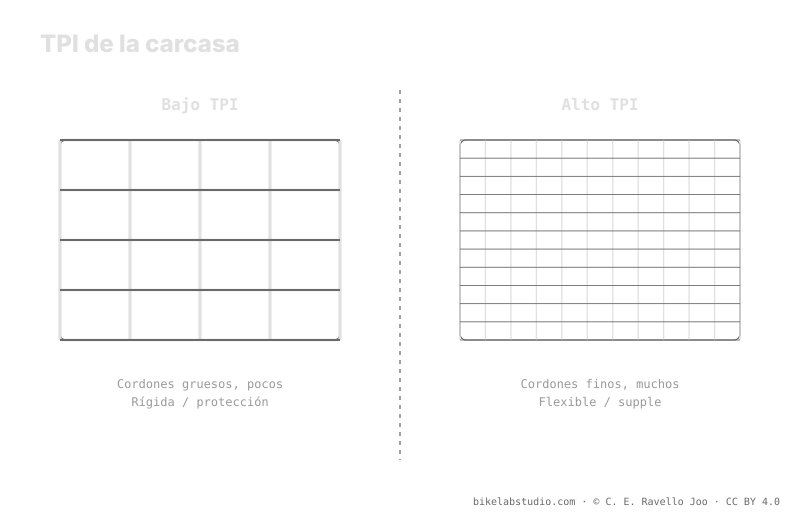

El TPI (threads per inch, hilos por pulgada) mide la densidad de hilos de la carcasa. Un TPI alto da una carcasa flexible y supple, que se adapta al terreno; un TPI bajo da una carcasa rígida y con más protección. La rigidez de la carcasa desplaza tu presión de partida: una supple no arranca donde una DH rígida. El TPI describe tacto, no calidad absoluta. El valor exacto de presión lo cierra la calculadora, porque la presión no es un número.
Ver una cifra de TPI en un flanco no te dice si el neumático es bueno: te dice cómo está tejida la carcasa. Y esa textura decide cuánto se adapta, cuánto protege y desde dónde empieza tu presión.
La carcasa mueve tu punto de partida: la Calculadora de Presión PSI te da tu rango real según peso, ancho, llanta y disciplina. ▶ Abrir la calculadora PSI
El TPI cuenta cuántos hilos por pulgada tiene la tela que forma la carcasa antes de recubrirla de caucho. Con TPI alto, esos hilos son más finos y numerosos: la carcasa resulta más flexible y supple, envuelve mejor las irregularidades del terreno y ofrece menos resistencia. Con TPI bajo, los hilos son más gruesos y menos densos: la carcasa es más rígida y robusta, con más cuerpo para resistir cortes y castigo. El TPI, por sí solo, no es una nota de calidad: es una descripción de la textura y la rigidez.

TPI alto no es "más caro y mejor": es "más adaptable y más frágil por sí solo". TPI bajo no es "barato": es "más duro y más protegido". Son compromisos, no niveles.
Aquí está el enlace con la presión. Una carcasa supple aporta poca estructura por sí misma: se apoya en el aire —o en insertos— para sostener la forma y no colapsar contra la llanta. Una carcasa rígida o reforzada aporta soporte propio, así que con el mismo peso puede correr distinto a una supple. Por eso la carcasa desplaza tu punto de partida: no arrancas en el mismo sitio con una carcasa ligera y flexible que con una DH de pared gruesa. La carcasa mueve el rango; nunca fija el número.
El TPI describe la densidad de hilos; el número de capas (ply) describe cuántas telas se apilan. Una construcción 1-ply usa una sola capa: más ligera y flexible, ideal donde prima rodar suave. Una 2-ply apila dos capas: más robusta frente a cortes y pellizcos, a costa de peso y rigidez. Sobre esa base, muchos neumáticos añaden bandas antipinchazos en flanco o banda de rodadura para proteger zonas críticas sin convertir toda la carcasa en un ladrillo. Así se combina el tacto de un TPI alto con protección selectiva.
No hay un TPI universal. Si ruedas terreno rápido y quieres adaptabilidad y poca resistencia, un TPI alto con protección puntual suele encajar. Si castigas roca afilada y buscas aguante, un TPI bajo o una carcasa de más capas te da margen. Y recuerda que la carcasa es una variable más dentro del rango: el peso te da el centro, la carcasa y el terreno te dicen dónde caes. El número exacto no sale del flanco del neumático, sale de cruzar todas tus variables.
Hilos por pulgada de la carcasa. TPI alto = flexible y supple; TPI bajo = rígido y con más protección. Describe tacto, no calidad.
Ninguno en abstracto. Alto se adapta y rueda suave pero pide protección; bajo aguanta más castigo con tacto más duro. Depende del terreno.
Sí: una supple aporta poca estructura y se apoya en el aire; una rígida da soporte propio. La carcasa mueve tu punto de partida.
1-ply es una capa, ligera y flexible; 2-ply son dos, más robustas frente a cortes. Muchos suman antipinchazos para proteger sin engordar.
La carcasa marca el punto de partida; la Calculadora de Presión PSI cierra tu rango real por rueda según ancho, llanta y disciplina. ▶ Abrir la calculadora PSI
© 2026 BikeLab Studio. Contenido bajo CC BY 4.0: puedes copiarlo, traducirlo y publicarlo, incluso con fines comerciales. La cita es obligatoria. Sin atribución, la licencia se revoca de forma automática (CC BY 4.0, §6.a) y el uso pasa a ser una infracción de derechos de autor: solicitamos la retirada del contenido y su desindexación. · Diseño y propiedad: Carlos Ravello Joo